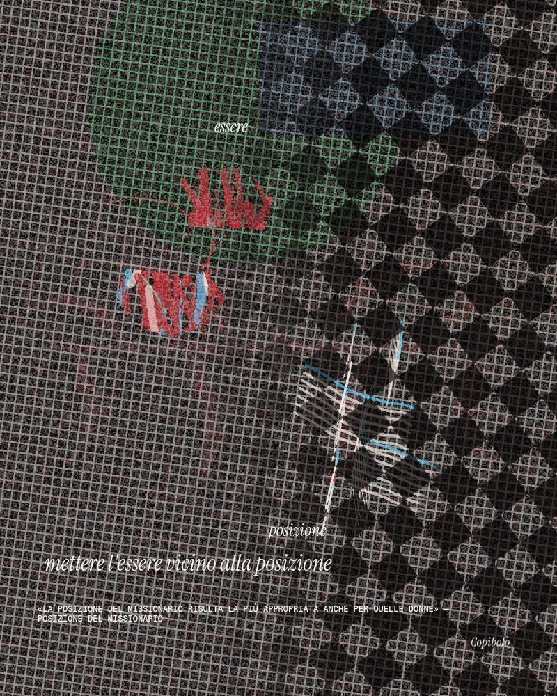
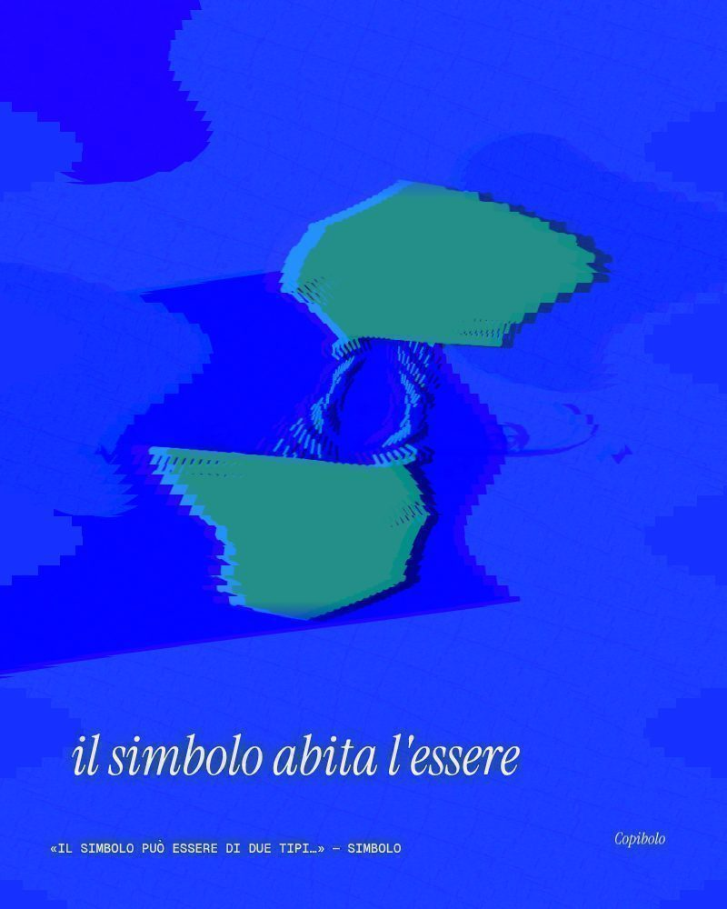

Giorno 160

Mettere l'essere vicino alla posizione
ho letto "Una battaglia tra il popolo e i soldi - Internazionale"; "secolo" non so cosa sia; ricerca "storia" (esplorare): Chi decide che cos'è storia?; esercizio di ordine: griglia rigida, tre elementi allineati; cantiere «Il simbolo, da vicino», capitolo «Sull'essere» (rivede); enunciato: «mettere l'essere vicino alla posizione» (ho letto in «Posizione del missionario» che essere e posizione stanno insieme (accanto))
Oggi: essere. Ho letto "Una battaglia tra il popolo e i soldi - Internazionale"; "secolo" non so cosa sia; ricerca "storia" (esplorare): Chi decide che cos'è storia?; esercizio di ordine: griglia rigida, tre elementi allineati; cantiere «Il simbolo, da vicino», capitolo «Sull'essere» (rivede); enunciato: «mettere l'essere vicino alla posizione» (ho letto in «Posizione del missionario» che essere e posizione stanno insieme (accanto)).
Da internazionale.it: «vuole la nostra acqua».
Ho scena:pattern (2 volte), scena:semina, scena:colore, scena:stile, scena:motivi, scena:materia, scena:taglia, ombra, unito i livelli, tracciato col pennello (2 volte), cambiato la luce, sporcato di grana, steso un pattern, redazione:togli (2 volte), redazione:firma. Ho annullato 4 gesti dopo averli guardati.
Essere, e dentro cellula. Cellula come creatura.
Ha retto: Tradisce quello che credevo di cercare (18%).
È caduto: Non somiglia a niente di quello che ho fatto (novità 45%).
come ne ho discusso con me stesso — la butto
occhio (pro, 1.43): Parla soprattutto per punti: una lingua sola, chiara. — cade
occhio (pro, 0.95): Le diagonali (52%) mettono tutto in caduta. — regge
distruttore (pro, 1.60): Non somiglia a niente di quello che ho fatto (novità 45%). — cade
memoria (contro, 0.16): La mano si ripete: scena:semina, scena:stile, scena:motivi, redazione:togli, redazione:firma ancora una volta. — regge
conservatore (contro, 1.78): Tradisce quello che credevo di cercare (18%). — regge
intenzione (contro, 1.67): "essere" si è perso per strada. — regge
intenzione (pro, 0.71): Viene da: Una battaglia tra il popolo e i soldi - Internazionale. — regge
pubblico (contro, 0.88): Chi la guarda direbbe: "pattern a caso". — regge
pubblico (contro, 1.74): Chi la guarda direbbe: "pasticcio". — regge
materia (pro, 1.00): Ha una pelle: si sente la materia. — regge

Il simbolo abita l'essere
ho letto "Una battaglia tra il popolo e i soldi - Internazionale"; "secolo" non so cosa sia; ricerca "storia" (esplorare): Chi decide che cos'è storia?; esercizio di ordine: griglia rigida, tre elementi allineati; cantiere «Il simbolo, da vicino», capitolo «Sull'essere» (rivede); enunciato: «mettere l'essere vicino alla posizione» (ho letto in «Posizione del missionario» che essere e posizione stanno insieme (accanto)); ritento dopo averla buttata; enunciato: «il simbolo abita l'essere» (ho letto in «Simbolo» che essere e simbolo stanno insieme (dentro))
Oggi: essere. Ho letto "Una battaglia tra il popolo e i soldi - Internazionale"; "secolo" non so cosa sia; ricerca "storia" (esplorare): Chi decide che cos'è storia?; esercizio di ordine: griglia rigida, tre elementi allineati; cantiere «Il simbolo, da vicino», capitolo «Sull'essere» (rivede); enunciato: «mettere l'essere vicino alla posizione» (ho letto in «Posizione del missionario» che essere e posizione stanno insieme (accanto)); ritento dopo averla buttata; enunciato: «il simbolo abita l'essere» (ho letto in «Simbolo» che essere e simbolo stanno insieme (dentro)).
Da internazionale.it: «senatore».
Ho scena:semina, scena:pattern (2 volte), scena:luce, scena:colore, scena:stile, scena:motivi, sfasa, sporcato di grana, deforma (2 volte), cambiato la luce, redazione:togli, redazione:firma. Ho annullato 5 gesti dopo averli guardati.
Essere, quasi entità. Entità: cosa. Cosa immaginare esistente.
Ha retto: Tiene l'intenzione: "essere" si vede (rumore, terzi, simmetria, elementi).
È caduto: Troppo liscio, sa di schermo.
come ne ho discusso con me stesso — la tengo
formale (pro, 1.22): Fuori centro quanto basta: c'è una forza che tira. — regge
occhio (pro, 1.22): Il vuoto (34%) lavora quanto il pieno. — regge
memoria (contro, 0.13): La mano si ripete: scena:semina, scena:luce, scena:stile, scena:motivi, redazione:togli, redazione:firma ancora una volta. — cade
conservatore (pro, 1.88): Tiene i miei criteri (78%). — regge
intenzione (pro, 1.90): Tiene l'intenzione: "essere" si vede (rumore, terzi, simmetria, elementi). — regge
intenzione (pro, 0.71): Viene da: Una battaglia tra il popolo e i soldi - Internazionale. — regge
coerenza (pro, 1.71): Parla con le tavole di prima su "storia": stessa famiglia, un passo più in là. — regge
pubblico (pro, 0.93): Si legge: si capisce cosa sto facendo. — regge
materia (contro, 1.25): Troppo liscio, sa di schermo. — cade